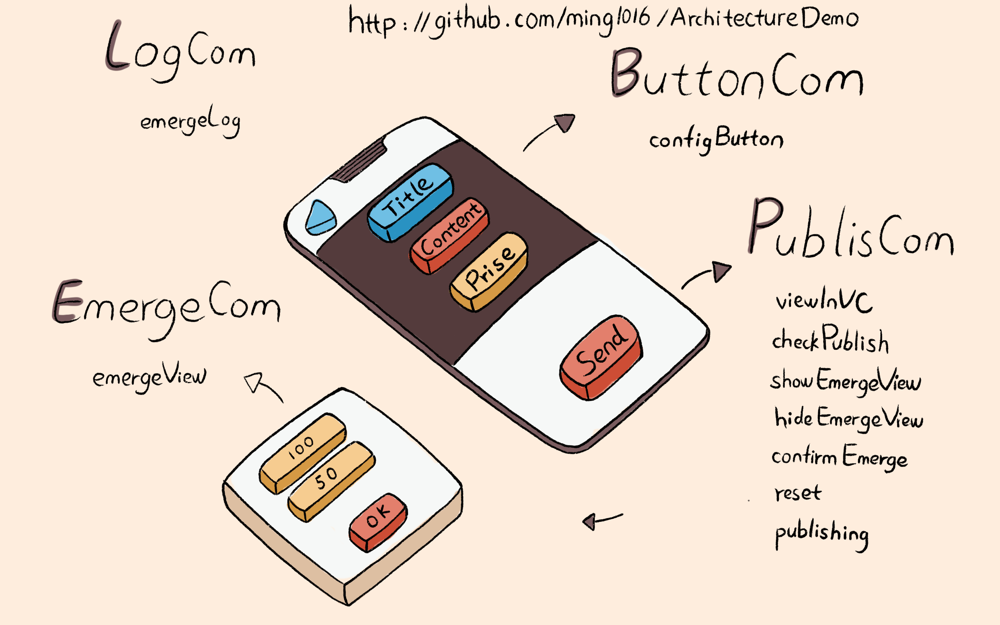

- 00 开篇词 锚定一个点，然后在这个点上深耕.md.html
- 01 建立你自己的iOS开发知识体系.md.html
- 02 App 启动速度怎么做优化与监控？.md.html
- 03 Auto Layout 是怎么进行自动布局的，性能如何？.md.html
- 04 项目大了人员多了，架构怎么设计更合理？.md.html
- 05 链接器：符号是怎么绑定到地址上的？.md.html
- 06 App 如何通过注入动态库的方式实现极速编译调试？.md.html
- 07 Clang、Infer 和 OCLint ，我们应该使用谁来做静态分析？.md.html
- 08 如何利用 Clang 为 App 提质？.md.html
- 09 无侵入的埋点方案如何实现？.md.html
- 10 包大小：如何从资源和代码层面实现全方位瘦身？.md.html
- 11 热点问题答疑（一）：基础模块问题答疑.md.html
- 12 iOS 崩溃千奇百怪，如何全面监控？.md.html
- 13 如何利用 RunLoop 原理去监控卡顿？.md.html
- 14 临近 OOM，如何获取详细内存分配信息，分析内存问题？.md.html
- 15 日志监控：怎样获取 App 中的全量日志？.md.html
- 16 性能监控：衡量 App 质量的那把尺.md.html
- 17 远超你想象的多线程的那些坑.md.html
- 18 怎么减少 App 电量消耗？.md.html
- 19 热点问题答疑（二）：基础模块问题答疑.md.html
- 20 iOS开发的最佳学习路径是什么？.md.html
- 21 除了 Cocoa，iOS还可以用哪些 GUI 框架开发？.md.html
- 22 细说 iOS 响应式框架变迁，哪些思想可以为我所用？.md.html
- 23 如何构造酷炫的物理效果和过场动画效果？.md.html
- 24 A_B 测试：验证决策效果的利器.md.html
- 25 怎样构建底层的发布和订阅事件总线？.md.html
- 26 如何提高 JSON 解析的性能？.md.html
- 27 如何用 Flexbox 思路开发？跟自动布局比，Flexbox 好在哪？.md.html
- 28 怎么应对各种富文本表现需求？.md.html
- 29 如何在 iOS 中进行面向测试驱动开发和面向行为驱动开发？.md.html
- 30 如何制定一套适合自己团队的 iOS 编码规范？.md.html
- 31 iOS 开发学习资料和书单推荐.md.html
- 32 热点问题答疑（三）.md.html
- 33 iOS 系统内核 XNU：App 如何加载？.md.html
- 34 iOS 黑魔法 Runtime Method Swizzling 背后的原理.md.html
- 35 libffi：动态调用和定义 C 函数.md.html
- 36 iOS 是怎么管理内存的？.md.html
- 37 如何编写 Clang 插件？.md.html
- 38 热点问题答疑（四）.md.html
- 39 打通前端与原生的桥梁：JavaScriptCore 能干哪些事情？.md.html
- 40 React Native、Flutter 等，这些跨端方案怎么选？.md.html
- 41 原生布局转到前端布局，开发思路有哪些转变？.md.html
- 42 iOS原生、大前端和Flutter分别是怎么渲染的？.md.html
- 43 剖析使 App 具有动态化和热更新能力的方案.md.html
- 用户故事 我是如何学习这个专栏的？.md.html
- 结束语 慢几步，深几度.md.html
- 捐赠
04 项目大了人员多了，架构怎么设计更合理？
你好，我是戴铭。今天，我要跟你说说怎么设计一个能够支持大型 iOS 工程的架构。
记得以前所在的团队，规模大了以后，客户端团队也被按照不同业务拆分到了不同的地方。当时，所有的代码都集中在一个仓库，团队里面一百多号人，只要有一个人提交错了，那么所有要更新代码的人都得等到修复后提交。这样一天下来，整个团队的沟通和互相等待都浪费了大量时间。同时，开发完成要进行测试时，由于代码相互耦合、归属不清，也影响到了问题排查的效率，并增加了沟通时间。
后来，我们痛定思痛，花了很大力气去进行架构整治，将业务完全解耦，将通用功能下沉，每个业务都是一个独立的 Git 仓库，每个业务都能够生成一个 Pod 库，最后再集成到一起。这样经过架构整治以后，也就没再出现过先前的窘境，开发效率也得到了极大的提升。由此可见，合理的架构是多么得重要。
其实，这并不是个例。当业务需求量和团队规模达到一定程度后，任何一款App都需要考虑架构设计的合理性。
而谈到架构治理，就需要将老业务、老代码按照新的架构设计模式进行重构。所以，架构重构考虑得越晚，重构起来就越困难，快速迭代的需求开发和漫长的重构之间的矛盾，如同在飞行的飞机上换引擎。及早考虑架构设计就显得尤为重要。
那么，如何设计一个能支持大规模 App 的架构呢？接下来，我就和你说说这个话题。
苹果官方推荐的 App 开发模式是 MVC，随之衍生出其他很多类 MVC 的设计模式 MVP、MVVM、MVCS ，它们在不同程度上增强了视图、数据的通信方式，使得逻辑、视图、数据之间的通信更灵活、规整、易于扩展。在 App 浪潮初期，几乎所有 App 采用的都是这种类MVC的结构。原因在于，MVC 是很好的面向对象编程范式，非常适合个人开发或者小团队开发。
但是，项目大了，人员多了以后，这种架构就扛不住了。因为，这时候功能的量级不一样了。一个大功能，会由多个功能合并而成，每个功能都成了一个独立的业务，团队成员也会按照业务分成不同的团队。此时，简单的逻辑、视图、数据划分再也无法满足 App 大规模工程化的需求。
所以，接下来我们就不得不考虑模块粒度如何划分、如何分层，以及多团队如何协作这三个问题了。解决了这三个问题以后，我们就可以对模块内部做进一步优化了。模块久经考验后，就能成为通用功能对外部输出，方便更多的团队。
总的来说，架构是需要演进的。如果项目规模大了还不演进，必然就会拖累业务的发展速度。
简单架构向大型项目架构演进中，就需要解决三个问题，即：模块粒度应该如何划分？如何分层？多团队如何协作？而在这其中，模块粒度的划分是架构设计中非常关键的一步。同时，这也是一个细活，我们最好可以在不同阶段采用不同的粒度划分模块。现在，我们就带着这三个问题继续往下看吧。
大项目、多人、多团队架构思考
接下来，我先和你说下模块粒度应该怎么划分的问题。
首先，项目规模变大后，模块划分必须遵循一定的原则。如果模块划分规则不规范、不清晰，就会导致代码耦合严重的问题，并加大架构重构的难度。这些问题主要表现在：
业务需求不断，业务开发不能停。重新划分模块的工作量越大，成本越高，重构技改需求排上日程的难度也就越大。
老业务代码年久失修，没有注释，修改起来需要重新梳理逻辑和关系，耗时长。
其次，我们需要搞清楚模块的粒度采用什么标准进行划分，也就是要遵循的原则是什么。
对于 iOS 这种面向对象编程的开发模式来说，我们应该遵循以下五个原则，即SOLID 原则。
单一功能原则：对象功能要单一，不要在一个对象里添加很多功能。
开闭原则：扩展是开放的，修改是封闭的。
里氏替换原则：子类对象是可以替代基类对象的。
接口隔离原则：接口的用途要单一，不要在一个接口上根据不同入参实现多个功能。
依赖反转原则：方法应该依赖抽象，不要依赖实例。iOS 开发就是高层业务方法依赖于协议。
同时，遵守这五个原则是开发出容易维护和扩展的架构的基础。
最后，我们需要选择合适的粒度。切记，大型项目的模块粒度过大或者过小都不合适。
其中，组件可以认为是可组装的、独立的业务单元，具有高内聚，低耦合的特性，是一种比较适中的粒度。就像用乐高拼房子一样，每个对象就是一块小积木。一个组件就是由一块一块的小积木组成的有单一功能的组合，比如门、柱子、烟囱。
在我看来，iOS 开发中的组件，不是 UI 的控件，也不是ViewController 这种大 UI 和功能的集合。因为，UI 控件的粒度太小，而页面的粒度又太大。iOS 组件，应该是包含 UI 控件、相关多个小功能的合集，是一种粒度适中的模块。
并且，采用组件的话，对于代码逻辑和模块间的通信方式的改动都不大，完成老代码切换也就相对容易些。我们可以先按照物理划分，也就是将多个相同功能的类移动到同一个文件夹下，然后做成 CocoaPods的包进行管理。
但是，仅做到这一步还不够，因为功能模块之间的耦合还是没有被解除。如果没有解除耦合关系的话，不同功能的开发还是没法独立开来，勉强开发完成后的影响范围评估也难以确定。
所以接下来，我们就需要重新梳理组件之间的逻辑关系，进行改造。
但是，组件解耦并不是说要求每个组件间都没有耦合，组件间也需要有上下层依赖的关系。组件间的上下层关系划分清楚了，就会容易维护和管理。而对于组件间如何分层这个问题，我认为层级最多不要超过三个，你可以这么设置：
底层可以是与业务无关的基础组件，比如网络和存储等；
中间层一般是通用的业务组件，比如账号、埋点、支付、购物车等；
最上层是迭代业务组件，更新频率最高。
这样的三层结构，尤其有利于多个团队分别开发维护。比如，一开始有两个业务团队A和B，他们在开发时既有通用的功能、账号、埋点、个人页等，也有专有的业务功能模块，每个功能都是一个组件。
这样，新创建的业务团队C，就能非常轻松地使用团队A和B开发出的通用组件。而且，如果两个业务团队有相同功能时，对相应的功能组件进行简单改造后，也能同时适用于两个业务团队。
但是，我认为不用把所有的功能都做成组件，只有那些会被多个业务或者团队使用的功能模块才需要做成组件。因为，改造成组件也是需要时间成本的，很少有公司愿意完全停下业务去进行重构，而一旦决定某业务功能模块要改成组件，就要抓住机会，严格按照 SOLID 原则去改造组件，因为返工和再优化的机会可能不会再有。
多团队之间如何分工？
在代码层面，我们通过组件化解决了大项目、多人、多团队架构的问题，但是架构问题还涉及到团队人员结构上的架构。当公司或者集团的 App 多了后，相应的团队也就多了，为了能够让产品快速迭代和稳定发展，也需要一个合理的团队结构。在我看来，这个合理的团队结构应该是这样的：
首先，需要一个专门的基建团队，负责业务无关的基础功能组件和业务相关通用业务组件的开发。
然后，每个业务都由一个专门的团队来负责开发。业务可以按照功能耦合度来划分，耦合度高的业务可以划分成单独的业务团队。
基建团队人员应该是流动的，从业务团队里来，再回到业务团队中去。这么设计是因为业务团队和基建团队的边界不应该非常明显，否则就会出现基建团队埋头苦干，结果可能是做得过多、做得不够，或着功能不好用的问题，造成严重的资源浪费。
总结来讲，我想说的是团队分工要灵活，不要把人员隔离固化了，否则各干各的，做的东西相互都不用。核心上，团队分工还是要围绕着具体业务进行功能模块提炼，去解决重复建设的问题，在这个基础上把提炼出的模块做精做扎实。否则，拉一帮子人臆想出来的东西，无人问津，那就是把自己架空了。
我心目中好的架构是什么样的？
现在，我们已经可以从代码内外来分析App开发的架构设计了，但也只是会分析了而已，脑海中并没有明确好的架构是什么样的，也不知道具体应该怎么设计。接下来，我们就带着这两个问题继续看下面的内容。
组件化是解决项目大、人员多的一种很好的手段，这在任何公司或团队都是没有歧义的。组件间关系协调却没有固定的标准，协调的优劣，成为了衡量架构优劣的一个基本标准。所以在实践中，一般分为了协议式和中间者两种架构设计方案。
协议式架构设计主要采用的是协议式编程的思路：在编译层面使用协议定义规范，实现可在不同地方，从而达到分布管理和维护组件的目的。这种方式也遵循了依赖反转原则，是一种很好的面向对象编程的实践。
但是，这个方案的缺点也很明显，主要体现在以下两个方面：
由于协议式编程缺少统一调度层，导致难于集中管理，特别是项目规模变大、团队变多的情况下，架构管控就会显得越来越重要。
协议式编程接口定义模式过于规范，从而使得架构的灵活性不够高。当需要引入一个新的设计模式来开发时，我们就会发现很难融入到当前架构中，缺乏架构的统一性。
虽然协议式架构有这两方面的局限性，但由于其简单易用的特点依然被很多公司采用。
另一种常用的架构形式是中间者架构。它采用中间者统一管理的方式，来控制 App 的整个生命周期中组件间的调用关系。同时，iOS 对于组件接口的设计也需要保持一致性，方便中间者统一调用。
中间者架构如下图所示：
图1 中间者架构示意图
可以看到，拆分的组件都会依赖于中间者，但是组间之间就不存在相互依赖的关系了。由于其他组件都会依赖于这个中间者，相互间的通信都会通过中间者统一调度，所以组件间的通信也就更容易管理了。在中间者上也能够轻松添加新的设计模式，从而使得架构更容易扩展。
在我看来，好的架构一定是健壮的、灵活的。中间者架构的易管控带来的架构更稳固，易扩展带来的灵活性，所以我认为中间者这种架构设计模式是非常值得推荐的。casatwy 以前设计了一个 CTMediator 就是按照中间者架构思路设计的。你可以在GitHub上看到它的内容。
CTMediator 使用的是运行时解耦，接下来我就通过开源的 CTMediator 代码，和你分享下如何使用运行时技术来解耦。解耦核心方法如下所示：
- (id)performTarget:(NSString *)targetName action:(NSString *)actionName params:(NSDictionary *)params shouldCacheTarget:(BOOL)shouldCacheTarget
{
NSString *swiftModuleName = params[kCTMediatorParamsKeySwiftTargetModuleName];
// generate target
NSString *targetClassString = nil;
if (swiftModuleName.length > 0) {
targetClassString = [NSString stringWithFormat:@"%@.Target_%@", swiftModuleName, targetName];
} else {
targetClassString = [NSString stringWithFormat:@"Target_%@", targetName];
}
NSObject *target = self.cachedTarget[targetClassString];
if (target == nil) {
Class targetClass = NSClassFromString(targetClassString);
target = [[targetClass alloc] init];
}
// generate action
NSString *actionString = [NSString stringWithFormat:@"Action_%@:", actionName];
SEL action = NSSelectorFromString(actionString);
if (target == nil) {
// 这里是处理无响应请求的地方之一，这个demo做得比较简单，如果没有可以响应的target，就直接return了。实际开发过程中是可以事先给一个固定的target专门用于在这个时候顶上，然后处理这种请求的
[self NoTargetActionResponseWithTargetString:targetClassString selectorString:actionString originParams:params];
return nil;
}
if (shouldCacheTarget) {
self.cachedTarget[targetClassString] = target;
}
if ([target respondsToSelector:action]) {
return [self safePerformAction:action target:target params:params];
} else {
// 这里是处理无响应请求的地方，如果无响应，则尝试调用对应target的notFound方法统一处理
SEL action = NSSelectorFromString(@"notFound:");
if ([target respondsToSelector:action]) {
return [self safePerformAction:action target:target params:params];
} else {
// 这里也是处理无响应请求的地方，在notFound都没有的时候，这个demo是直接return了。实际开发过程中，可以用前面提到的固定的target顶上的。
[self NoTargetActionResponseWithTargetString:targetClassString selectorString:actionString originParams:params];
[self.cachedTarget removeObjectForKey:targetClassString];
return nil;
}
}
performTarget:action:params:shouldCacheTarget:方法主要是对 targetName 和 actionName 进行容错处理，也就是对调用方法无响应的处理。这个方法封装了 safePerformAction:target:params 方法，入参 targetName 就是调用接口的对象，actionName 是调用的方法名，params 是参数。
从代码中同时还能看出只有满足 Target_ 前缀的对象和 Action 的方法才能被 CTMediator 使用。这时，我们可以看出中间者架构的优势，也就是利于统一管理，可以轻松管控制定的规则。
下面这段代码，是使用 CTMediator 如何调用一个弹窗显示方法的代码示范：
[self performTarget:kCTMediatorTargetA
action:kCTMediatorActionShowAlert
params:paramsToSend
shouldCacheTarget:NO];
可以看出，指定了对象名和调用方法名，把参数封装成字典传进去就能够直接调用该方法了。
但是，这种运行时直接硬编码的调用方式也有些缺点，主要表现在两个方面：
直接硬编码的调用方式，参数是以string的方法保存在内存里，虽然和将参数保存在Text字段里占用的内存差不多，同时还可以避免.h文件的耦合，但是其对代码编写效率的降低也比较明显。
由于是在运行时才确定的调用方法，调用方式由 [obj method] 变成 [obj performSelector:@“”]。这样的话，在调用时就缺少类型检查，是个很大的缺憾。因为，如果方法和参数比较多的时候，代码编写效率就会比较低。
这篇文章发出后 CTMediator 的作者 casatwy 找到了我，指出文章中提到的 CTMediator 的硬编码和字典传参这两个缺点，实际上已经被完美解决了。下面是 casatwy 的原话，希望可以对你有所帮助。
CTMediator 本质就是一个方法，用来接收 target、action、params。由于 target、action 都是字符串，params是字典，对于调用者来说十分不友好，因为调用者要写字符串，而且调用的时候若是不看文档，他也不知道这个字典里该塞什么东西。
所以实际情况中，调用者是不会直接调用CTMediator的方法的。那调用者怎么发起调用呢？通过响应者给CTMediator做的category或者extension发起调用。
category或extension以函数声明的方式，解决了参数的问题。调用者看这个函数长什么样子，就知道给哪些参数。在category或extension的方法实现中，把参数字典化，顺便把target、action这俩字符串写死在调用里。
于是，对于调用者来说，他就不必查文档去看参数怎么给，也不必担心target、action字符串是什么了。这个category是一个独立的Pod，由响应者业务的开发给到。
所以，当一个工程师开发一个业务的时候，他会开发两个Pod，一个是category Pod，一个是自己本身的业务Pod。这样就完美解决了CTMediator它自身的缺点。
对于调用者来说，他不会直接依赖CTMediator去发起调用，而是直接依赖category Pod去发起调用的。这么一来，CTMediator方案就完美了。
然后还有一点可能需要强调：基于CTMediator方案的工程，每一个组件无所谓是OC还是Swift，Pod也无所谓是category还是extension。也就是说，假设一个工程由100个组件组成，那可以是50个OC、50个Swift。因为CTMediator抹去了不同语言的组件之间的隔阂，所以大家老的OC工程可以先应用CTMediator，把组件拆出来。然后新的业务来了，用Swift写，等有空的时候再把老的OC改成Swift，或者不改，都是没问题的。
不过，解耦的精髓在于业务逻辑能够独立出来，并不是形式上的解除编译上的耦合（编译上解除耦合只能算是解耦的一种手段而已）。所以，在考虑架构设计时，我们更多的还是需要在功能逻辑和组件划分上做到同层级解耦，上下层依赖清晰，这样的结构才能够使得上层组件易插拔，下层组件更稳固。而中间者架构模式更容易维护这种结构，中间者的易管控和易扩展性，也使得整体架构能够长期保持稳健与活力。所以，中间者架构就是我心目中好的架构。
案例分享
明确了中间者架构是我认为的好架构，那么如何体现其易管控和易扩展性呢？我通过一个案例来和你一起分析下。
这个例子的代码，在 CTMediator 的基础上进行了扩展，完整代码请点击这个GitHub链接 。
这个范例的主要组件类名和方法名，如下图所示：

图2 主要的组件类名和方法名
可以看出，这个范例在中间者架构的基础上增加了对中间件、状态机、观察者、工厂模式的支持。同时，这个案例也在使用上做了些优化，支持了链式调用，代码如下：
self.dispatch(CdntAction.cls(@"PublishCom").mtd(@"viewInVC").pa(dic));
代码中的PublishCom 是组件类名，ViewInVC 是方法名。
下面说下中间件模式。在添加中间件的时候，我们只需要链式调用 addMiddlewareAction 就可以在方法执行之前插入中间件。代码如下：
self.middleware(@"PublishCom showEmergeView").addMiddlewareAction(CdntAction.clsmtd(@"AopLogCom emergeLog").pa(Dic.create.key(@"actionState").val(@"show").done));
这行代码对字典参数也使用了链式方便参数的设置，使得字典设置更易于编写。改变状态使用 toSt 方法即可，状态的维护和管理都在内部实现。同一个方法不同状态的实现只需要在命名规则上做文章即可，这也是得易于中间者架构可以统一处理方法调用规则的特性。比如，confirmEmerge 方法在不同状态下的实现代码如下：
// 状态管理
- (void)confirmEmerge_state_focusTitle:(NSDictionary *)dic {
NSString *title = dic[@"title"];
[self.fromAddressBt setTitle:title forState:UIControlStateNormal];
self.fromAddressBt.tag = 1;
}
- (void)confirmEmerge_state_focusContent:(NSDictionary *)dic {
NSString *title = dic[@"title"];
[self.toAddressBt setTitle:title forState:UIControlStateNormal];
self.toAddressBt.tag = 1;
}
- (void)confirmEmerge_state_focusPrice:(NSDictionary *)dic {
NSString *title = dic[@"title"];
[self.peopleBt setTitle:title forState:UIControlStateNormal];
self.peopleBt.tag = 1;
}
可以看出，我们只需要在方法名后面加上“ _state _状态名”，就能够对不同状态进行不同实现了。
对于观察者模式，使用起来也很简单清晰。比如，发布文章这个事件需要两个观察者，一个执行重置界面，一个检查是否能够发布，代码如下：
// 观察者管理 self.observerWithIdentifier(@"publishOk").addObserver(CdntAction.clsmtd(@"PublishCom reset")).addObserver(CdntAction.clsmtd(@"PublishCom checkPublish"));
这样的写法非常简单清晰。在发布时，我们只需要执行如下代码：
[self notifyObservers:@"publishOk"];
观察者方法添加后，也会记录在内部，它们的生命周期跟随中间者的生命周期。
工厂模式的思路和状态机类似，状态机是对方法在不同状态下的实现，而工厂模式是对类在不同设置下的不同实现。由于有了中间者，我就可以在传入类名后对其进行类似状态机中方法名的处理，以便类的不同实现可以通过命名规则来完成。我们先看看中间者处理状态机的代码：
// State action 状态处理
if (![self.p_currentState isEqual:@"init"]) {
SEL stateMethod = NSSelectorFromString([NSString stringWithFormat:@"%@_state_%@:", sep[1], self.p_currentState]);
if ([obj respondsToSelector:stateMethod]) {
return [self executeMethod:stateMethod obj:obj parameters:parameters];
}
}
可以看出当前的状态会记录在 p_currentState 属性中，方法调用时方法名会和当前的状态的命名拼接成一个完整的实现方法名来调用。中间者处理工厂模式的思路也类似，代码如下：
// Factory
// 由于后面的执行都会用到 class 所以需要优先处理 class 的变形体
NSString *factory = [self.factories objectForKey:classStr];
if (factory) {
classStr = [NSString stringWithFormat:@"%@_factory_%@", classStr, factory];
classMethod = [NSString stringWithFormat:@"%@ %@", classStr, sep[1]];
}
可以看出，采用了中间者这种架构设计思想后，架构就具有了很高的扩展性和可管控性。所以，我推崇这种架构设计思路。
小结
架构的设计绝对不是要等到工程到了燃眉之急之时，再去环顾其他公司或团队在用什么架构，然后拍脑袋拿一个过来，来次大重构。好的架构，需要在业务开发过程中及早发现开发的痛点，进行有针对性的改良，不然就会和实际开发越走越远。
比如，某个业务模块的逻辑非常复杂、状态有很多，这时我们就需要在架构层面考虑如何处理会更方便，改动最小的支持状态机模式，又或者在开始架构设计时就多考虑如何将架构设计的具有更高的易用性和可扩展性。
好的架构是能够在一定的规范内同时支持高灵活度，这种度的把握是需要架构师长期跟随团队开发，随着实际业务需求的演进进行分析和把控的。
在项目大了，人员多了的情况下，好的架构一定是不简单的，不通用的，但一定是接地气的，这样才能更适合自己的团队，才能够用得上。那些大而全，炫技，脱离业务开发需求的架构是没法落地的。
最后，我提点建议。我在面试应聘者的时候，通常都会问他所负责项目的整体架构是怎样的。结果呢，很多人都只对自己负责的那摊子事儿说的溜，而回答所在项目整体情况时却支支吾吾，也因此没能面试成功。
所以，作为一名普通的开发者，除了日常需求开发和技术方案调研、设计外，你还需要了解自己所在项目的整体架构是怎样的，想想架构上哪些地方是不够好需要改进的，业界有哪些好的架构思想是可以落地到自己项目中的。有了从项目整体上去思考的意识，你才能够站在更高的视角上去思考问题。这，也是对架构师的基本要求。
课后作业
架构如何设计众说纷纭，请你来说下你们项目目前架构是怎样的，并画出你心中理想的架构图。
感谢你的收听，欢迎你在评论区给我留言分享你的观点，也欢迎把它分享给更多的朋友一起阅读。
© 2019 - 2023 Liangliang Lee. Powered by gin and hexo-theme-book.